<!DOCTYPE html>
<html lang="en">
<head>
<meta charset="UTF-8" />
<meta name="viewport" content="width=device-width, initial-scale=1.0, viewport-fit=cover" />
<title>SummitReady — Onboarding &amp; Pro</title>

<!--
  ════════════════════════════════════════════════════════════════════════════
  SUMMITREADY · ONBOARDING + PRO / PAYWALL — high-fidelity prototype

  One connected journey: first launch → six onboarding screens → the Pro
  proposition → a plan decision → into the app. Every route through it ends
  somewhere useful, including every route that declines Pro.

  ⚠⚠ NOT APPROVED COMMERCIAL DECISIONS ⚠⚠
    £4.99, "7 day free trial", "Save 40%", the monthly/yearly split and the
    Free/Pro feature boundary shown here are ILLUSTRATIVE PLACEHOLDERS for
    layout purposes. They are not SummitReady pricing, not an approved trial
    structure and not agreed entitlements. They live in one frozen object
    (COMMERCIAL_PROTOTYPE) and never inside a component, so changing them is
    a data edit. Final pricing, trial terms and entitlements require
    product-owner approval before any production work.

  ⚠ All other data is illustrative too — 12,420 m banked, Mont Blanc
    readiness, Everest Simulation stages, route metrics. See PROTOTYPE_DATA.

  ── What this prototype does NOT do ───────────────────────────────────────
  • No billing. No StoreKit, no Play Billing, no RevenueCat, no payment
    sheet, no product identifiers, no trial creation. "Start free trial" sets
    a local prototype flag and nothing else.
  • No authentication. Get Started and Sign In hand off to the existing auth
    architecture; nothing new is designed here.
  • No 3D mapping SDK, and NO PROVIDER IS NAMED OR IMPLIED. The advanced
    tools screen is a product concept drawn in SVG; provider selection and
    licensing are undecided.
  • It does not rebuild Training Basecamp, Expedition Basecamp, Readiness,
    Explore or the Route tools. The Pro feature stories are promotional
    representations, and onboarding hands off to the real screens.
  • No dark patterns: dismissal is a full-size control on every Pro screen,
    never hidden, never delayed, and declining always lands in the free app.
  ════════════════════════════════════════════════════════════════════════════
-->

<script src="https://cdn.tailwindcss.com"></script>
<link rel="preconnect" href="https://fonts.googleapis.com">
<link rel="preconnect" href="https://fonts.gstatic.com" crossorigin>
<link href="https://fonts.googleapis.com/css2?family=Inter:wght@400;500;600;700;800&display=swap" rel="stylesheet">
<script>
  tailwind.config = { theme: { extend: {
    colors: { ink:'#05090B', accent:'#167DF7', train:'#24EFA4', warn:'#E9B949', gold:'#E4A93C' },
    fontFamily: { sans:['Inter','system-ui','-apple-system','sans-serif'] },
  } } }
</script>
<style>
  :root { --ink:#05090B; --accent:#167DF7; --train:#24EFA4; --gold:#E4A93C; }
  html, body { margin:0; background:var(--ink); color-scheme:dark; }
  .no-sb { -ms-overflow-style:none; scrollbar-width:none; }
  .no-sb::-webkit-scrollbar { display:none; }
  .ph { background-color:#101c28; background-image:
        linear-gradient(165deg, rgba(22,125,247,.12), rgba(0,0,0,0) 48%),
        linear-gradient(to top, #070c0e 0%, #101c28 42%, #21405e 72%, #4d6d8e 100%); }
  .ph > img { opacity:0; transition:opacity .6s ease; }
  .ph > img.ok { opacity:1; }
  .glass     { background:rgba(255,255,255,.07); border:1px solid rgba(255,255,255,.13); backdrop-filter:blur(14px); }
  .panel     { background:linear-gradient(158deg, rgba(18,30,44,.92) 0%, rgba(10,16,21,.94) 62%, rgba(8,12,16,.96) 100%);
               border:1px solid rgba(255,255,255,.075); }
  .panel-sub { background:rgba(255,255,255,.035); border:1px solid rgba(255,255,255,.07); }
  .pressable { transition:transform .12s ease, filter .12s ease; }
  .pressable:active { transform:scale(.975); filter:brightness(1.14); }
  .hexa { clip-path:polygon(50% 0%, 93% 25%, 93% 75%, 50% 100%, 7% 75%, 7% 25%); }
  .bar-fill { transition:width 1.05s cubic-bezier(.22,1,.36,1); }
  .bar-rise { transition:height .95s cubic-bezier(.22,1,.36,1); }
  /* restrained entrance: a gentle rise, staggered, never bouncy */
  .rise   { animation:rise .52s cubic-bezier(.22,1,.36,1) both; }
  @keyframes rise { from { opacity:0; transform:translateY(14px); } to { opacity:1; transform:none; } }
  /* a slow drift on the hero photograph, the only ambient motion in here */
  .drift  { animation:drift 22s ease-in-out infinite alternate; }
  @keyframes drift { from { transform:scale(1.06) translate3d(0,0,0); } to { transform:scale(1.13) translate3d(-1.6%,-1.6%,0); } }
  .spin   { animation:spin 1s linear infinite; }
  @keyframes spin { to { transform:rotate(360deg); } }
  @media (prefers-reduced-motion: reduce) {
    *, .rise, .drift, .spin { animation:none !important; transition:none !important; }
  }
  :focus-visible { outline:2px solid var(--accent); outline-offset:2px; border-radius:6px; }
  .safe-top { padding-top:calc(14px + env(safe-area-inset-top, 0px)); }
  .safe-bot { padding-bottom:calc(16px + env(safe-area-inset-bottom, 0px)); }
</style>
</head>
<body class="font-sans text-white antialiased">

<div class="relative mx-auto w-full max-w-[430px] min-h-[100svh] bg-ink overflow-x-hidden">
  <!-- one full-height stage: every screen is a photograph, a column of
       content and a CTA block that is always reachable -->
  <div id="stage" class="relative min-h-[100svh] flex flex-col"></div>

  <div id="toast" style="opacity:0;transform:translate(-50%,8px)"
       class="pointer-events-none fixed left-1/2 bottom-[26px] z-[60] max-w-[92vw] transition-all duration-300
              px-[15px] py-[9px] rounded-full glass text-[11.5px] font-semibold text-center"></div>
</div>

<script>
/* ╔══════════════════════════════════════════════════════════════════════════╗
   ║  COMMERCIAL_PROTOTYPE — ILLUSTRATIVE PLACEHOLDERS, NOT APPROVED PRICING  ║
   ╚══════════════════════════════════════════════════════════════════════════╝
   Everything commercial lives here and ONLY here. No component contains a
   price, a period, a trial length or a discount, so all of it can change
   without touching a single line of layout.

   None of these values is a SummitReady commercial decision. They exist so
   the plan screen has something to render. Before any production work they
   must be replaced by product-owner-approved pricing, an approved trial
   structure and an agreed entitlement boundary — and sourced at runtime from
   the store, never from the client. */
const COMMERCIAL_PROTOTYPE = Object.freeze({
  approved: false,
  status: 'ILLUSTRATIVE PLACEHOLDER — not approved pricing, trial or entitlements',
  currency: '£',
  plans: Object.freeze({
    free: Object.freeze({ id:'proto_free', name:'Free', price:0, blurb:'Explore the basics' }),
    pro:  Object.freeze({ id:'proto_pro',  name:'Pro',  blurb:'Everything in Free, and further',
      periods: Object.freeze({
        monthly: Object.freeze({ id:'proto_pro_monthly', price:4.99, unit:'per month', note:null }),
        yearly:  Object.freeze({ id:'proto_pro_yearly',  price:2.99, unit:'per month',
                                 note:'billed yearly', savingPct:40 }),
      }) }),
  }),
  trial: Object.freeze({ enabled:true, days:7, label:'free trial' }),
  /* Wording that would become a commercial claim is kept here too, so nobody
     hard-codes "cancel anytime" into a button. */
  claims: Object.freeze({
    cancellation: 'Cancel anytime',
    cancellationIsIllustrative: true,
  }),
});

/* QA overrides, deliberately OUTSIDE the frozen config so no commercial value
   ever becomes writable in the running prototype. Null means "use the config". */
const COMMERCIAL_OVERRIDE = { trialEnabled:null };
const trialConfig = () => ({
  ...COMMERCIAL_PROTOTYPE.trial,
  enabled: COMMERCIAL_OVERRIDE.trialEnabled === null
    ? COMMERCIAL_PROTOTYPE.trial.enabled : COMMERCIAL_OVERRIDE.trialEnabled,
});

/* PROPOSED entitlement boundary — a starting point for the conversation, not
   a decision. The guiding principle is deliberate: the free tier must be a
   real product. Tracking a hike and banking its elevation are FREE, because a
   new user has to be able to build a relationship with SummitReady before
   being asked for anything. */
const PROPOSED_ENTITLEMENTS = Object.freeze({
  note: 'PROPOSED, not agreed. Final entitlements require product-owner approval.',
  free: Object.freeze([
    'Track any hike', 'Build your Elevation Bank', 'Basic mountain and route information',
    'Achievements and Rank', 'Your profile and activity history',
  ]),
  pro: Object.freeze([
    'Personalised mountain training plans', 'Full Readiness insight',
    'Expeditions with stage tracking', 'Offline maps and route tools',
    '3D route and terrain tools (concept — provider undecided)',
    'Advanced Mountain DNA and analytics', 'Premium challenges',
  ]),
});

/* ⚠ ILLUSTRATIVE PROTOTYPE DATA — NOT PRODUCTION SEED DATA ⚠ */
const PROTOTYPE_DATA = Object.freeze({
  illustrative: true,
  canonicalSource: {
    elevationBank:'Elevation Bank → lifetimeAscentM',
    readiness:    'Readiness 2.0 → scored per user and objective',
    expeditions:  'Expedition engine → stages and progress',
    mountains:    'Summit Data Engine', routes:'Route Engine',
    commercial:   'the store / billing provider at runtime — never the client',
  },
  notice:
    'Illustrative prototype data. The Elevation Bank figure, readiness percentages, ' +
    'expedition progress, route metrics, and every price, trial length, discount and ' +
    'entitlement boundary shown are placeholders for layout. None is canonical, and ' +
    'the commercial values are not approved decisions.',
});
const ILLUSTRATIVE = Symbol.for('summitready.illustrativeData');

/* ════════════════════ ANALYTICS EVENT CONTRACT ════════════════════
   The events we will want to measure, declared here so the names are agreed
   before anything is wired. This prototype records them in memory and prints
   them to the console — it touches no production analytics. */
const ANALYTICS_CONTRACT = Object.freeze({
  onboarding_started:        Object.freeze(['source']),
  onboarding_step_viewed:    Object.freeze(['step_id', 'step_index', 'step_count']),
  onboarding_skipped:        Object.freeze(['step_id', 'step_index']),
  onboarding_intent_selected:Object.freeze(['intent', 'changed_from']),
  onboarding_completed:      Object.freeze(['intent', 'skipped', 'duration_ms']),
  auth_sign_in_tapped:       Object.freeze([]),
  pro_viewed:                Object.freeze(['context', 'entry_point']),
  pro_feature_viewed:        Object.freeze(['feature_id', 'index']),
  pro_billing_period_changed:Object.freeze(['period']),
  pro_plan_selected:         Object.freeze(['plan_id', 'period']),
  pro_trial_cta_tapped:      Object.freeze(['plan_id', 'period', 'trial_days', 'context']),
  pro_dismissed:             Object.freeze(['step_id', 'context']),
  app_entered:               Object.freeze(['destination', 'intent', 'tier']),
});
const ANALYTICS = [];
function track(event, props = {}) {
  if (!ANALYTICS_CONTRACT[event]) { console.warn('[analytics] undeclared event:', event); return null; }
  const rec = { event, props, t:Date.now() };
  ANALYTICS.push(rec);
  console.debug('[analytics]', event, props);
  return rec;
}

/* ════════════════════ MEDIA SOURCE POLICY ════════════════════
   A screen asks for a SUBJECT; the policy decides the source. Onboarding and
   Pro imagery is not wired to one permanent path — production may resolve it
   from curated photography, approved SummitReady assets, approved editorial
   imagery, community work, or the designed gradient fallback. */
const MEDIA = {
  policy: ['community_potm', 'community', 'curated', 'fallback'],
  sources: {
    community_potm: {}, community: {},
    curated: {
      hero:'mockup-assets/ob-hero.jpg',      bank:'mockup-assets/ob-bank.jpg',
      progress:'mockup-assets/ob-progress.jpg', intent:'mockup-assets/ob-intent.jpg',
      ready:'mockup-assets/ob-ready.jpg',    paths:'mockup-assets/ob-progress.jpg',
      train:'mockup-assets/ob-train.jpg',    exped:'mockup-assets/ob-exped.jpg',
      i1:'mockup-assets/ob-i1.jpg', i2:'mockup-assets/ob-i2.jpg', i3:'mockup-assets/ob-i3.jpg',
      proHero:'mockup-assets/pro-hero.jpg',  proPlan:'mockup-assets/pro-plan.jpg',
      proFinal:'mockup-assets/pro-final.jpg',
      proTrain:'mockup-assets/pro-train.jpg', proExped:'mockup-assets/pro-exped.jpg',
      proTools:'mockup-assets/pro-tools.jpg',
    },
  },
  resolve(subject) {
    for (const src of this.policy) {
      const hit = (this.sources[src] || {})[subject];
      if (hit) return { url:hit, source:src };
    }
    return { url:null, source:'fallback' };   /* a designed state, not a break */
  },
};

/* ════════════════════ ONBOARDING CONTENT ════════════════════ */
const INTENTS = [
  { id:'training',   subject:'i1', title:'I want to train for\na specific mountain',
    destination:'Training Basecamp',   why:'A real mountain you intend to climb.' },
  { id:'expedition', subject:'i2', title:'I want to take on\nan expedition',
    destination:'Expeditions Library', why:'A legendary objective, climbed through local hills.' },
  { id:'explore',    subject:'i3', title:'I want to explore\nand track mountains',
    destination:'Explore',            why:'Find mountains, record hikes, build history.' },
];
/* The progression ecosystem, in the badge language already established.
   Every one of these is earned from real recorded activity — never points. */
const PROGRESSION = [
  { icon:'walk',  label:'Milestones',      fill:'from-[#2E6FD6] to-[#123C7E]' },
  { icon:'peak',  label:'Mountains',       fill:'from-[#2FA36B] to-[#124A2E]' },
  { icon:'snow',  label:'Challenges',      fill:'from-[#5FC9E8] to-[#12465A]' },
  { icon:'flag',  label:'Expeditions',     fill:'from-[#2F8FA3] to-[#123F4A]' },
  { icon:'medal', label:'Ranks',           fill:'from-[#C98A2E] to-[#5E3C10]' },
  { icon:'trend', label:'Personal Growth', fill:'from-[#3D6DB0] to-[#14263F]' },
];
const READY_POINTS = [
  'Train for your goals', 'Take on epic expeditions', 'Track your progress',
  'Build your Elevation Bank', 'Become a stronger, more confident mountaineer',
];
/* Illustrative demonstration state for the Elevation Bank screen. A new user
   has banked nothing — this is what the bank LOOKS like once it is running,
   and the screen says so in as many words. */
const BANK_DEMO = Object.freeze({
  lifetimeAscentM: 12420, yearOnYearPct: 28,
  monthly: [640, 720, 880, 1010, 1180, 1460, 1720, 1540, 1610],
});

/* ════════════════════ PRO CONTENT ════════════════════
   One paywall, many entry points. `context` only changes the lead message —
   the plan screen, the pricing and the dismissal behaviour are identical
   wherever it opens from, so there is a single paywall to maintain. */
const PRO_CONTEXTS = {
  onboarding:      { kicker:'SUMMITREADY PRO', lead:'Unlock the full power of SummitReady. Build the capability to take on bigger mountains.' },
  training_plan:   { kicker:'PERSONALISED TRAINING', lead:'Turn this mountain into a training plan built around where you are now.' },
  readiness:       { kicker:'FULL READINESS',        lead:'See every pillar behind your readiness score, and exactly what to work on.' },
  expedition:      { kicker:'EXPEDITIONS',           lead:'Take on a legendary objective, stage by stage, on the hills you can reach.' },
  offline_routes:  { kicker:'OFFLINE ROUTES',        lead:'Take the whole route with you, for the days there is no signal.' },
  route_3d:        { kicker:'ADVANCED ROUTE TOOLS',  lead:'See the ground before you stand on it.' },
};
const PRO_FEATURES = [
  { id:'training', icon:'chart', title:'TRAIN SMARTER\nFOR BIGGER MOUNTAINS',
    body:'Personalised training plans for mountains around the world. Know when you’re ready.' },
  { id:'expeditions', icon:'flag', title:'TAKE ON EPIC\nEXPEDITIONS',
    body:'Turn local mountains into stages of something extraordinary. Real progress. Real achievement.' },
  { id:'tools', icon:'layers', title:'ADVANCED TOOLS.\nDEEPER INSIGHTS.',
    body:'Offline maps. 3D routes. Mountain DNA. Everything you need to go further.' },
];
/* Illustrative promotional content for the feature stories. These are
   representations, not the real screens — Training Basecamp, Expedition
   Basecamp and the route tools are untouched. */
const PROMO = Object.freeze({
  training:{ mountain:'Mont Blanc', altitude:'4,810 m', progress:62, readiness:68,
    steps:[ { label:'Build base fitness',        done:true  },
            { label:'Increase elevation gain',   done:true  },
            { label:'Practice on similar terrain',done:false },
            { label:'Complete readiness test',   done:false } ] },
  expedition:{ name:'Everest Simulation', altitude:'8,848 m', progress:62,
    stages:[ { n:1, m:1200 }, { n:2, m:1800 }, { n:3, m:2000 }, { n:4, m:1600 }, { n:5, m:1300 } ] },
  tools:{ distanceKm:10.4, ascentM:820, duration:'4h 36m' },
});

[INTENTS, PROGRESSION, READY_POINTS, PRO_FEATURES].forEach(c => { c[ILLUSTRATIVE] = true; });
</script>

<script>
/* ═══════════════════════ ICONS ═══════════════════════ */
const S = (d, a = 'stroke-width="1.8"') =>
  `<svg viewBox="0 0 24 24" fill="none" stroke="currentColor" ${a} stroke-linecap="round" stroke-linejoin="round">${d}</svg>`;
const ICONS = {
  mark:  S(`<path d="M1.6 19.2 6.9 12l2.3 2.9 4.1-6.2 8.1 10.5z"/><path d="M7.4 11.2 9.6 8l1.6 2.2"/>`, 'stroke-width="1.5"'),
  peak:  S(`<path d="M2.6 19.4h18.8L15.2 5.4l-3.8 6.8-2.8-3.6z"/>`, 'stroke-width="1.6"'),
  walk:  S(`<circle cx="13.4" cy="4.4" r="2"/><path d="M11 21.6l2-5.6-2.4-2.2.9-4.6-3 1.8-1.3 3"/><path d="M13 16l2.6 2.2 1.4 3.4M11.5 9.2l3 1.2 2.4-1.6"/>`),
  flag:  S(`<path d="M6 21V4.2M6 4.8h11.8l-2.3 3.9 2.3 3.9H6"/>`),
  medal: S(`<circle cx="12" cy="15.2" r="5.2"/><path d="M8.4 10.4 5.6 3.4h12.8l-2.8 7"/>`, 'stroke-width="1.6"'),
  trend: S(`<path d="M3.6 16.4 9 11l3.4 3.4 7.4-7.4"/><path d="M15.4 7h4.4v4.4"/>`, 'stroke-width="2"'),
  snow:  S(`<path d="M12 2.8v18.4M4 7.4l16 9.2M20 7.4 4 16.6"/><path d="m9.4 4.8 2.6 2.4 2.6-2.4M9.4 19.2l2.6-2.4 2.6 2.4"/>`, 'stroke-width="1.6"'),
  chev:  S(`<path d="m9 5 7 7-7 7"/>`),
  back:  S(`<path d="M19.5 12h-15M10.5 6l-6 6 6 6"/>`),
  arrowR:S(`<path d="M4.5 12h15M13.5 6l6 6-6 6"/>`, 'stroke-width="2"'),
  check: S(`<path d="m5 12.6 4.6 4.4L19 6.8"/>`, 'stroke-width="2.6"'),
  clock: S(`<circle cx="12" cy="12" r="8.6"/><path d="M12 7.2V12l3 1.8"/>`),
  route: S(`<circle cx="5.1" cy="17.7" r="1.9"/><circle cx="18.9" cy="6.3" r="1.9"/><path d="M6.7 16.9c2.8-.5 2.5-4.3 4.9-5.5s5 .2 6.1-3.2"/>`),
  dna:   S(`<path d="M5 3.4c0 5.4 14 7.8 14 13.2M19 3.4c0 5.4-14 7.8-14 13.2"/><path d="M5 20.6h14M5 3.4h14M7.6 7.6h8.8M7.6 14.4h8.8"/>`, 'stroke-width="1.5"'),
  chart: `<svg viewBox="0 0 24 24" fill="currentColor"><rect x="4" y="14.5" width="3.6" height="5.5" rx="1.2"/><rect x="10.2" y="10" width="3.6" height="10" rx="1.2"/><rect x="16.4" y="4.8" width="3.6" height="15.2" rx="1.2"/></svg>`,
  layers:S(`<path d="m12 3.4 8.6 4.6L12 12.6 3.4 8z"/><path d="m3.4 12.4 8.6 4.6 8.6-4.6M3.4 16.6l8.6 4.6 8.6-4.6"/>`, 'stroke-width="1.6"'),
  target:S(`<circle cx="12" cy="12" r="8.4"/><circle cx="12" cy="12" r="4.4"/><circle cx="12" cy="12" r="1"/>`, 'stroke-width="1.7"'),
  down:  S(`<path d="M12 3.6v11.2M7.4 10.4 12 15l4.6-4.6M4.4 19.6h15.2"/>`, 'stroke-width="1.9"'),
  cube:  S(`<path d="M12 2.8 20.4 7v10L12 21.2 3.6 17V7z"/><path d="M3.6 7 12 11.2 20.4 7M12 11.2v10"/>`, 'stroke-width="1.5"'),
  map:   S(`<path d="M3.4 6.6 9 4.4v13L3.4 19.6z"/><path d="M9 4.4l6 2.2v13l-6-2.2M15 6.6l5.6-2.2v13L15 19.6"/>`, 'stroke-width="1.5"'),
  lock:  S(`<rect x="4.4" y="10.4" width="15.2" height="10.2" rx="2.4"/><path d="M8 10.4V7.6a4 4 0 0 1 8 0v2.8"/>`),
  spark: S(`<path d="M12 3.2 13.9 9l5.8 1.9-5.8 1.9L12 18.6l-1.9-5.8L4.3 10.9 10.1 9z"/>`, 'stroke-width="1.5"'),
};
function icon(n, s) {
  const h = document.createElement('span'); h.innerHTML = ICONS[n] || '';
  const g = h.firstElementChild;
  if (g) { g.setAttribute('width', s); g.setAttribute('height', s); g.style.display = 'block'; }
  return h.innerHTML;
}
function hydrateIcons(root = document) {
  root.querySelectorAll('[data-icon]').forEach(n => {
    n.innerHTML = icon(n.dataset.icon, n.dataset.size || 16); n.style.display = 'inline-flex';
  });
}
function loadPhotos(root = document) {
  root.querySelectorAll('img[data-src]').forEach(i => {
    if (i.dataset.started || !i.dataset.src) return;
    i.dataset.started = '1';
    i.addEventListener('load',  () => i.classList.add('ok'));
    i.addEventListener('error', () => i.remove());
    i.src = i.dataset.src;
  });
}
const esc = s => String(s).replace(/[&<>"]/g, c => ({ '&':'&amp;','<':'&lt;','>':'&gt;','"':'&quot;' }[c]));
const fmt = n => Math.round(n).toLocaleString('en-GB');
const nl  = s => esc(s).replace(/\n/g, '<br>');
/* Prices are formatted here, from the frozen config. No component knows one. */
const money = v => v === 0 ? `${COMMERCIAL_PROTOTYPE.currency}0`
  : `${COMMERCIAL_PROTOTYPE.currency}${v.toFixed(2)}`;

function Photo(subject, cls, drift) {
  const m = MEDIA.resolve(subject);
  const positioned = /\b(absolute|fixed|sticky)\b/.test(cls);
  return `<div class="ph ${positioned ? '' : 'relative'} overflow-hidden ${cls}">
    ${m.url ? `` : ''}</div>`;
}
/* Every screen is the same object: a photograph behind, a scrim, a scrolling
   column, and a CTA block pinned to the bottom so no control can ever fall
   below the fold. */
function Screen({ subject, scrim, top, body, cta, drift }) {
  return `
    ${Photo(subject, 'absolute inset-0', drift)}
    <div class="absolute inset-0 ${scrim || 'bg-gradient-to-b from-ink/70 via-ink/80 to-ink'}"></div>
    <div class="relative flex flex-col min-h-[100svh]">
      <div class="safe-top px-[20px]">${top || ''}</div>
      <div class="flex-1 min-h-0 overflow-y-auto no-sb px-[20px] pt-[8px] pb-[10px]">${body || ''}</div>
      <div class="px-[20px] safe-bot">${cta || ''}</div>
    </div>`;
}
const Wordmark = (size = 'h-[15px]') => `
  <div class="flex items-center justify-center gap-[9px]">
    
    
  </div>`;
const Primary = (label, attr, icon = 'arrowR') => `
  <button ${attr} class="w-full h-[52px] rounded-[14px] bg-accent text-white text-[15px] font-bold pressable
      flex items-center justify-center gap-[9px] shadow-lg shadow-accent/25">
    ${esc(label)}${icon ? `<span data-icon="${icon}" data-size="16"></span>` : ''}</button>`;
/* Dismissal is a real control: same width, same height, same hit area as the
   primary. It is never a grey word in a corner. */
const Secondary = (label, attr) => `
  <button ${attr} class="w-full h-[48px] rounded-[14px] glass text-[13.5px] font-bold text-white/85 pressable">
    ${esc(label)}</button>`;
function Dots(n, i) {
  return `<div class="flex items-center justify-center gap-[6px]" role="presentation">
    ${Array.from({ length:n }, (_, k) => `<span class="rounded-full transition-all duration-300
      ${k === i ? 'w-[18px] h-[5px] bg-accent' : 'w-[5px] h-[5px] bg-white/25'}"></span>`).join('')}
  </div>`;
}
function SkipBar(attr, label = 'Skip') {
  return `<div class="flex items-center justify-between min-h-[44px]">
    <span class="w-[64px]" aria-hidden="true"></span>
    <button ${attr} class="grid place-items-center min-w-[64px] h-[44px] px-[10px] -mr-[10px]
            text-[13px] font-semibold text-white/65 pressable">${esc(label)}</button>
  </div>`;
}
function BackSkipBar(backAttr, skipAttr, skipLabel = 'Skip') {
  return `<div class="flex items-center justify-between min-h-[44px]">
    <button ${backAttr} aria-label="Back"
      class="grid place-items-center w-[44px] h-[44px] -ml-[11px] rounded-full pressable">
      <span class="grid place-items-center w-[34px] h-[34px] rounded-full glass" data-icon="back" data-size="16"></span></button>
    <div class="flex items-center gap-[8px]">
      
      
    </div>
    <button ${skipAttr} class="grid place-items-center min-w-[64px] h-[44px] px-[10px] -mr-[10px]
            text-[13px] font-semibold text-white/65 pressable">${esc(skipLabel)}</button>
  </div>`;
}
const H1 = (t, cls = '') => `<h1 class="text-[clamp(25px,7.6vw,31px)] font-extrabold leading-[1.1] tracking-[-.02em] ${cls}">${nl(t)}</h1>`;
const Lede = t => `<p class="mt-[10px] text-[clamp(12.5px,3.6vw,14px)] leading-[1.5] text-white/70">${nl(t)}</p>`;

let toastTimer;
function toast(msg) {
  const t = document.getElementById('toast');
  t.textContent = msg; t.style.opacity = '1'; t.style.transform = 'translate(-50%, 0)';
  clearTimeout(toastTimer);
  toastTimer = setTimeout(() => { t.style.opacity = '0'; t.style.transform = 'translate(-50%, 8px)'; }, 2300);
}
</script>

<script>
/* ═══════════════════════ ONBOARDING ═══════════════════════
   Six screens. Five of them are a photograph, a headline and one decision.
   Only ONE asks the user for anything, and it asks after the product has been
   explained rather than before. */

/* 1 · BRAND — emotional positioning. No features, no explanation. */
function ScreenWelcome() {
  return Screen({
    subject:'hero', drift:true,
    scrim:'bg-gradient-to-b from-ink/35 via-ink/55 to-ink',
    top:`<div class="pt-[10px]">${Wordmark()}</div>`,
    body:`
      <div class="h-[16vh] min-h-[40px]"></div>
      <div class="rise">
        <h1 class="text-[clamp(38px,12.5vw,52px)] font-extrabold leading-[.96] tracking-[-.03em]">HIGHER<br>EVERY DAY</h1>
      </div>
      <div class="flex-1"></div>`,
    cta:`
      <div class="rise" style="animation-delay:.12s">
        <p class="text-[clamp(13px,4vw,15px)] leading-[1.45] text-white/80">
          Train. Explore. Achieve.<br>
          <span class="text-white/60">Turn everyday hills into extraordinary adventures.</span></p>
        <div class="mt-[16px]">${Dots(4, 0)}</div>
        <div class="mt-[14px]">${Primary('Get Started', 'data-go="paths"')}</div>
        <p class="mt-[13px] text-center text-[12.5px] text-white/50">
          Already have an account?
          <button data-signin class="ml-[3px] inline-grid place-items-center min-h-[44px] px-[6px] -my-[10px]
            font-bold text-accent pressable align-middle">Sign in</button></p>
      </div>`,
  });
}

/* 2 · TWO PATHS — the single most important explanatory screen. Training and
   Expeditions are related but DIFFERENT products, and the copy keeps them
   apart: training prepares you for a mountain you intend to climb; an
   expedition is a legendary objective climbed through real local hills.
   Nothing is chosen here — this screen explains. */
function PathCard(o) {
  return `<div class="panel rounded-[18px] overflow-hidden">
    <div class="relative h-[104px]">
      ${Photo(o.subject, 'absolute inset-0')}
      <div class="absolute inset-0 bg-gradient-to-t from-[#0b131c] via-[#0b131c]/40 to-transparent"></div>
      <span class="absolute left-[13px] bottom-[11px] grid place-items-center w-[36px] h-[36px] rounded-[12px]
                   bg-accent/90 text-white" data-icon="${o.icon}" data-size="19"></span>
    </div>
    <div class="px-[14px] pt-[12px] pb-[14px] flex items-start gap-[11px]">
      <div class="min-w-0 flex-1">
        <div class="text-[15.5px] font-extrabold leading-[19px]">${esc(o.title)}</div>
        <p class="mt-[6px] text-[12px] leading-[17px] text-white/62">${esc(o.body)}</p>
      </div>
      <span class="shrink-0 mt-[2px] grid place-items-center w-[30px] h-[30px] rounded-full bg-white/[.09] text-white/70"
            data-icon="chev" data-size="14"></span>
    </div>
  </div>`;
}
function ScreenPaths() {
  return Screen({
    subject:'paths',
    scrim:'bg-gradient-to-b from-ink/85 via-ink/90 to-ink',
    top:BackSkipBar('data-go="welcome"', 'data-skip="paths"'),
    body:`
      <div class="pt-[14px] text-center rise">
        ${H1('TWO WAYS\nTO GO HIGHER')}
        ${Lede('Choose your path, or explore both.')}
      </div>
      <div class="mt-[18px] grid gap-[12px] rise" style="animation-delay:.08s">
        ${PathCard({ subject:'train', icon:'peak', title:'Train for a specific mountain',
          body:'Personalised training plans. Build your readiness for a real mountain you intend to climb. Reach your goal.' })}
        ${PathCard({ subject:'exped', icon:'flag', title:'Take on an expedition',
          body:'Turn local mountains into stages of a bigger adventure. Real progress toward an iconic objective.' })}
      </div>
      <p class="mt-[14px] text-center text-[11.5px] leading-[16px] text-white/40">
        You are not choosing permanently — both are always there.</p>`,
    cta:`<div class="mb-[14px]">${Dots(4, 1)}</div>${Primary('Next', 'data-go="bank"')}`,
  });
}

/* 3 · ELEVATION BANK — SummitReady's currency, given the whole screen.
   The figure is explicitly labelled as a demonstration: a new user has banked
   nothing, and the screen must never imply otherwise. */
function ScreenBank() {
  const max = Math.max(...BANK_DEMO.monthly);
  return Screen({
    subject:'bank',
    scrim:'bg-gradient-to-b from-ink/86 via-ink/90 to-ink',
    top:BackSkipBar('data-go="paths"', 'data-skip="bank"'),
    body:`
      <div class="pt-[14px] text-center rise">
        ${H1('EVERY METRE\nCOUNTS.')}
        ${Lede('Track your hikes.\nBuild your Elevation Bank.\nGrow your mountain experience.')}
      </div>

      <div class="mt-[18px] panel rounded-[20px] p-[16px] border-accent/25
                  bg-gradient-to-br from-accent/[.14] via-transparent to-transparent rise"
           style="animation-delay:.1s" aria-label="Example Elevation Bank">
        <div class="flex items-center gap-[11px]">
          <span class="grid place-items-center w-[42px] h-[42px] shrink-0 rounded-[14px]
                       bg-gradient-to-br from-accent to-[#0C57B4] text-white" data-icon="mark" data-size="22"></span>
          <div class="min-w-0">
            <div class="text-[11px] font-bold tracking-[.14em] text-white/60">ELEVATION BANK</div>
            <div class="mt-[2px] flex items-baseline gap-[4px]">
              <span id="bankCount" class="text-[clamp(30px,9vw,38px)] font-extrabold tabular-nums leading-none tracking-[-.02em]"
                    data-count="${BANK_DEMO.lifetimeAscentM}">0</span>
              <span class="text-[18px] font-bold text-white/70">m</span>
            </div>
          </div>
        </div>
        <div class="mt-[13px] flex items-end justify-between gap-[3px] h-[58px]">
          ${BANK_DEMO.monthly.map((v, i) => `
            <span class="flex-1 min-w-0 rounded-t-[3px] bar-rise ${i === BANK_DEMO.monthly.length - 1 ? 'bg-accent' : 'bg-accent/50'}"
                  style="height:0" data-rise="${Math.round(v / max * 50)}"></span>`).join('')}
        </div>
        <div class="mt-[9px] flex items-center gap-[5px] text-[12.5px] font-bold text-train">
          <span data-icon="trend" data-size="14"></span>+${BANK_DEMO.yearOnYearPct}% this year</div>
        <!-- said plainly, not in fine print: this is a demonstration -->
        <p class="mt-[9px] text-[10.5px] leading-[14px] text-white/42">
          An example of a bank already running. Yours starts at zero and grows with every hike you record.</p>
      </div>

      <div class="mt-[16px] grid grid-cols-3 gap-[9px] rise" style="animation-delay:.16s">
        ${[['route','Track\nany hike'],['mark','Earn\nelevation'],['medal','Unlock\nachievements']].map(([ic, l]) => `
          <div class="flex flex-col items-center text-center min-w-0">
            <span class="grid place-items-center w-[44px] h-[44px] rounded-full glass text-white/85"
                  data-icon="${ic}" data-size="20"></span>
            <span class="mt-[8px] text-[11px] leading-[14px] font-semibold text-white/65">${nl(l)}</span>
          </div>`).join('')}
      </div>`,
    cta:`<div class="mb-[14px]">${Dots(4, 2)}</div>${Primary('Next', 'data-go="progress"')}`,
  });
}

/* 4 · PROGRESSION — what accumulates. Everything here is earned from real
   recorded activity; nothing is a point you can buy or grind. */
function ScreenProgress() {
  return Screen({
    subject:'progress',
    scrim:'bg-gradient-to-b from-ink/88 via-ink/92 to-ink',
    top:BackSkipBar('data-go="bank"', 'data-skip="progress"'),
    body:`
      <div class="pt-[14px] text-center rise">
        ${H1('REAL PROGRESS.\nREAL REWARDS.')}
        ${Lede('Climb more. Achieve more.\nBecome the mountaineer you want to be.')}
      </div>
      <div class="mt-[20px] grid grid-cols-3 gap-x-[10px] gap-y-[18px] rise" style="animation-delay:.1s">
        ${PROGRESSION.map((p, i) => `
          <div class="flex flex-col items-center min-w-0 rise" style="animation-delay:${.12 + i * .05}s">
            <span class="grid place-items-center w-[58px] h-[64px] hexa bg-gradient-to-b ${p.fill}">
              <span class="text-white/95" data-icon="${p.icon}" data-size="26"></span></span>
            <span class="mt-[8px] text-[11px] font-semibold text-center leading-[13px] text-white/72 break-words w-full">${esc(p.label)}</span>
          </div>`).join('')}
      </div>
      <p class="mt-[20px] text-center text-[11.5px] leading-[16px] text-white/45">
        Every badge and every rank comes from activity you actually recorded — not points.</p>`,
    cta:`<div class="mb-[14px]">${Dots(4, 3)}</div>${Primary('Next', 'data-go="intent"')}`,
  });
}

/* 5 · INTENT — the only question in the whole flow, and it is optional.
   It is not a mode lock: it picks where you land first. */
function IntentCard(o, selected) {
  return `<button data-intent="${o.id}" aria-pressed="${selected}"
      class="w-full panel rounded-[16px] p-[9px] flex items-center gap-[12px] text-left pressable
             ${selected ? 'border-accent ring-1 ring-accent/45' : ''}">
    ${Photo(o.subject, 'w-[74px] h-[62px] rounded-[11px] shrink-0')}
    <span class="min-w-0 flex-1">
      <span class="block text-[14px] font-bold leading-[18px]">${nl(o.title)}</span>
      <span class="block mt-[3px] text-[11px] leading-[14px] text-white/48">${esc(o.why)}</span>
    </span>
    <span class="shrink-0 grid place-items-center w-[28px] h-[28px] rounded-full
                 ${selected ? 'bg-accent text-white' : 'bg-white/[.09] text-white/60'}"
          data-icon="${selected ? 'check' : 'chev'}" data-size="${selected ? 13 : 14}"></span>
  </button>`;
}
function ScreenIntent() {
  const sel = FLOW.intent;
  return Screen({
    subject:'intent',
    scrim:'bg-gradient-to-b from-ink/88 via-ink/92 to-ink',
    top:BackSkipBar('data-go="progress"', 'data-skip="intent"'),
    body:`
      <div class="pt-[14px] text-center rise">
        ${H1('WHAT BRINGS\nYOU HERE?')}
        ${Lede('This helps us personalise your experience.\nYou can change this anytime.')}
      </div>
      <div class="mt-[18px] grid gap-[10px] rise" style="animation-delay:.08s">
        ${INTENTS.map(o => IntentCard(o, sel === o.id)).join('')}
      </div>
      <p class="mt-[13px] text-center text-[11.5px] leading-[16px] text-white/40">
        Not a permanent choice — it only decides where you start.</p>`,
    cta:`<div class="mb-[14px]">${Dots(4, 3)}</div>
      ${Primary(sel ? 'Next' : 'Next', 'data-go="ready"')}`,
  });
}

/* 6 · READY — the close. A summary, not another question. */
function ScreenReady() {
  const dest = FLOW.intent ? INTENTS.find(i => i.id === FLOW.intent) : null;
  return Screen({
    subject:'ready', drift:true,
    scrim:'bg-gradient-to-b from-ink/55 via-ink/82 to-ink',
    top:`<div class="min-h-[34px]"></div>`,
    body:`
      <div class="pt-[8px] text-center rise">
        ${H1("YOU'RE READY\nTO BEGIN")}
        ${Lede('Mountains are closer than you think.')}
      </div>
      <div class="mt-[22px] grid gap-[13px] rise" style="animation-delay:.1s">
        ${READY_POINTS.map((p, i) => `
          <div class="flex items-start gap-[11px] rise" style="animation-delay:${.14 + i * .06}s">
            <span class="shrink-0 mt-[1px] grid place-items-center w-[23px] h-[23px] rounded-full
                         border border-accent/60 bg-accent/15 text-accent" data-icon="check" data-size="12"></span>
            <span class="text-[14px] leading-[20px] font-semibold text-white/88">${esc(p)}</span>
          </div>`).join('')}
      </div>
      ${dest ? `<div class="mt-[20px] panel-sub rounded-[13px] px-[12px] py-[10px] flex items-center gap-[9px] rise"
            style="animation-delay:.46s">
          <span class="shrink-0 text-accent" data-icon="target" data-size="14"></span>
          <span class="text-[11.5px] leading-[16px] text-white/60">
            We&rsquo;ll start you in <strong class="text-white/85">${esc(dest.destination)}</strong>.
            <button data-go="intent" class="ml-[2px] inline-grid place-items-center min-h-[44px] px-[6px] -my-[12px]
              font-bold text-accent pressable align-middle">Change</button></span>
        </div>` : ''}`,
    cta:`<div class="mb-[14px]">${Dots(4, 3)}</div>
      ${Primary('Continue to SummitReady', 'data-complete')}`,
  });
}
</script>

<script>
/* ═══════════════════════ PRO / PAYWALL ═══════════════════════
   ONE paywall. `FLOW.proContext` swaps the lead message and nothing else —
   the feature stories, the plan screen, the pricing source and the dismissal
   behaviour are identical from every entry point, so there is one component
   to maintain rather than five. */

/* A phone-shaped frame for the promotional screens. It is deliberately a
   REPRESENTATION: Training Basecamp, Expedition Basecamp and the route tools
   are real screens elsewhere and are not rebuilt here. */
function DeviceFrame(inner, cls = '') {
  return `<div class="mx-auto w-full max-w-[268px] rounded-[26px] p-[7px] bg-[#0b1218] ring-1 ring-white/12
                      shadow-2xl shadow-black/60 ${cls}">
    <div class="rounded-[20px] overflow-hidden bg-[#070d13]">${inner}</div>
  </div>`;
}
function ProIntro() {
  const ctx = PRO_CONTEXTS[FLOW.proContext] || PRO_CONTEXTS.onboarding;
  const T = trialConfig();
  return Screen({
    subject:'proHero', drift:true,
    scrim:'bg-gradient-to-b from-ink/72 via-ink/88 to-ink',
    top:SkipBar('data-pro-dismiss="intro"', 'Not now'),
    body:`
      <div class="pt-[6px] text-center rise">
        ${Wordmark()}
        <div class="mt-[14px] inline-flex items-center gap-[6px] px-[11px] py-[5px] rounded-full
                    bg-accent/[.18] border border-accent/40">
          <span class="text-accent" data-icon="spark" data-size="13"></span>
          <span class="text-[11px] font-extrabold tracking-[.16em] text-accent">${esc(ctx.kicker)}</span>
        </div>
        <div class="mt-[16px]">${H1('GO HIGHER\nWITH SUMMITREADY PRO')}</div>
        <p class="mt-[11px] text-[13px] leading-[1.5] text-white/70">${esc(ctx.lead)}</p>
      </div>
      <div class="mt-[20px] grid gap-[12px] rise" style="animation-delay:.1s">
        ${[['chart','Personalised mountain training plans'],
           ['flag','Full expedition mode with stage tracking'],
           ['target','Advanced mountain readiness insights'],
           ['map','Offline maps and route tools'],
           ['dna','Detailed Mountain DNA and analytics']].map(([ic, t], i) => `
          <div class="flex items-center gap-[12px] rise" style="animation-delay:${.14 + i * .05}s">
            <span class="shrink-0 grid place-items-center w-[34px] h-[34px] rounded-[11px]
                         bg-accent/[.16] text-accent" data-icon="${ic}" data-size="17"></span>
            <span class="text-[13.5px] leading-[18px] font-semibold text-white/85">${esc(t)}</span>
          </div>`).join('')}
      </div>
      <!-- the free tier is named on the Pro screen itself, so nobody reads
           this as "the app does nothing until you pay" -->
      <div class="mt-[18px] panel-sub rounded-[13px] px-[12px] py-[11px] flex items-start gap-[9px]">
        <span class="mt-[1px] shrink-0 text-white/45" data-icon="check" data-size="14"></span>
        <span class="text-[11.5px] leading-[16px] text-white/55">
          Tracking hikes and building your Elevation Bank stay free. Pro adds the deeper tools for
          preparing and taking on bigger objectives.</span>
      </div>`,
    cta:`
      <div class="mb-[13px]">${Dots(6, 0)}</div>
      ${Primary(T.enabled ? `Start ${T.days} Day Free Trial` : 'See plans', 'data-pro-go="feature0"')}
      <p class="mt-[10px] text-center text-[11px] text-white/38">
        ${esc(COMMERCIAL_PROTOTYPE.claims.cancellation)} · illustrative prototype terms</p>`,
  });
}

/* ── feature story 1 · TRAINING ─────────────────────────────────────────── */
function TrainingPromo() {
  const p = PROMO.training;
  return DeviceFrame(`
    <div class="relative h-[108px]">
      ${Photo('proTrain', 'absolute inset-0')}
      <div class="absolute inset-0 bg-gradient-to-t from-[#070d13] via-[#070d13]/30 to-transparent"></div>
    </div>
    <div class="px-[12px] -mt-[24px] relative">
      <div class="flex items-center gap-[9px]">
        <span class="grid place-items-center w-[34px] h-[34px] rounded-full bg-accent text-white ring-[3px] ring-[#070d13]"
              data-icon="peak" data-size="17"></span>
        <div class="min-w-0">
          <div class="text-[13px] font-extrabold truncate">${esc(p.mountain)}</div>
          <div class="text-[10px] text-white/50">${esc(p.altitude)}</div>
        </div>
      </div>
      <div class="mt-[11px] flex gap-[12px] text-[9.5px] font-bold border-b border-white/10 pb-[6px]">
        ${['Overview','Plan','Readiness','Routes'].map((t, i) => `
          <span class="${i === 1 ? 'text-accent' : 'text-white/40'}">${t}</span>`).join('')}
      </div>
      <div class="mt-[11px] panel-sub rounded-[11px] p-[10px]">
        <div class="flex items-baseline justify-between text-[9.5px] font-bold text-white/55">
          <span>Your Progress</span><span class="tabular-nums text-white/75">${p.readiness}% ready</span></div>
        <div class="mt-[5px] text-[17px] font-extrabold tabular-nums leading-none">${p.progress}%</div>
        <div class="mt-[6px] h-[6px] rounded-full bg-white/[.09] overflow-hidden">
          <div class="h-full rounded-full bg-train bar-fill" style="width:0%" data-bar="${p.progress}"></div></div>
      </div>
      <div class="mt-[10px] pb-[12px] grid gap-[7px]">
        ${p.steps.map(s => `
          <div class="flex items-center gap-[8px]">
            <span class="grid place-items-center w-[15px] h-[15px] shrink-0 rounded-full
                         ${s.done ? 'bg-train text-ink' : 'border border-white/25 text-transparent'}"
                  data-icon="check" data-size="9"></span>
            <span class="text-[10.5px] ${s.done ? 'text-white/80' : 'text-white/45'}">${esc(s.label)}</span>
          </div>`).join('')}
      </div>
    </div>`);
}
/* ── feature story 2 · EXPEDITIONS ──────────────────────────────────────── */
function ExpeditionPromo() {
  const e = PROMO.expedition;
  return DeviceFrame(`
    <div class="relative h-[112px]">
      ${Photo('proExped', 'absolute inset-0')}
      <div class="absolute inset-0 bg-gradient-to-t from-[#070d13] via-[#070d13]/25 to-transparent"></div>
    </div>
    <div class="px-[12px] -mt-[22px] relative pb-[12px]">
      <div class="flex items-center gap-[9px]">
        <span class="grid place-items-center w-[32px] h-[32px] rounded-[10px] bg-accent text-white ring-[3px] ring-[#070d13]"
              data-icon="flag" data-size="16"></span>
        <div class="min-w-0">
          <div class="text-[12.5px] font-extrabold truncate">${esc(e.name)}</div>
          <div class="text-[10px] text-white/50">${esc(e.altitude)}</div>
        </div>
      </div>
      <div class="mt-[12px] text-[9.5px] font-bold text-white/55">Progress</div>
      <div class="mt-[5px] h-[7px] rounded-full bg-white/[.09] overflow-hidden">
        <div class="h-full rounded-full bg-train bar-fill" style="width:0%" data-bar="${e.progress}"></div></div>
      <div class="mt-[11px] grid gap-[6px]">
        ${e.stages.map(s => `
          <div class="flex items-center gap-[8px] text-[10.5px]">
            <span class="grid place-items-center w-[14px] h-[14px] shrink-0 rounded-full bg-train text-ink"
                  data-icon="check" data-size="8"></span>
            <span class="text-white/75">Stage ${s.n}</span>
            <span class="ml-auto flex items-center gap-[4px] text-white/55 tabular-nums">
              <span class="text-white/35" data-icon="clock" data-size="10"></span>${fmt(s.m)} m</span>
          </div>`).join('')}
      </div>
      <!-- an expedition is real local mountains accumulating toward an iconic
           objective. It is not a training plan, and it is not described as one. -->
      <p class="mt-[10px] text-[9.5px] leading-[13px] text-white/40">
        Each stage is a real hill you go and walk.</p>
    </div>`);
}
/* ── feature story 3 · ADVANCED TOOLS ───────────────────────────────────
   A PRODUCT CONCEPT. The terrain below is hand-drawn SVG. No mapping SDK is
   loaded, no tiles are fetched, and no provider is named or implied —
   provider selection and licensing are entirely undecided. */
function ToolsPromo() {
  const t = PROMO.tools;
  return DeviceFrame(`
    <div class="px-[9px] pt-[9px]">
      <div class="flex gap-[2px] p-[2px] rounded-[9px] bg-white/[.07]">
        ${['Map','3D','Elevation'].map((l, i) => `
          <span class="flex-1 text-center py-[5px] rounded-[7px] text-[10px] font-bold
                       ${i === FLOW.toolsTab ? 'bg-white text-ink' : 'text-white/55'}"
                data-tools-tab="${i}">${l}</span>`).join('')}
      </div>
    </div>
    <div class="relative mt-[9px] h-[172px]">
      ${Photo('proTools', 'absolute inset-0')}
      <div class="absolute inset-0 bg-gradient-to-t from-[#070d13]/85 via-transparent to-[#070d13]/30"></div>
      <svg viewBox="0 0 240 172" class="absolute inset-0 w-full h-full" aria-hidden="true">
        <path d="M44 156 C 70 140, 66 118, 92 108 S 130 92, 138 70 S 166 46, 190 30"
              fill="none" stroke="#167DF7" stroke-width="3.4" stroke-linecap="round" opacity=".95"/>
        <circle cx="44" cy="156" r="5" fill="#fff"/><circle cx="190" cy="30" r="5.5" fill="#167DF7" stroke="#fff" stroke-width="2"/>
      </svg>
    </div>
    <div class="px-[12px] py-[11px] flex items-center justify-around text-[10.5px] tabular-nums">
      <span class="flex items-center gap-[4px]"><span class="text-white/40" data-icon="route" data-size="12"></span>${t.distanceKm} km</span>
      <span class="flex items-center gap-[4px]"><span class="text-accent" data-icon="mark" data-size="12"></span>${fmt(t.ascentM)} m</span>
      <span class="flex items-center gap-[4px]"><span class="text-white/40" data-icon="clock" data-size="12"></span>${esc(t.duration)}</span>
    </div>`);
}
function ProFeature(i) {
  const f = PRO_FEATURES[i];
  const promo = [TrainingPromo, ExpeditionPromo, ToolsPromo][i];
  return Screen({
    subject:'proHero',
    scrim:'bg-gradient-to-b from-ink/90 via-ink/94 to-ink',
    top:SkipBar(`data-pro-dismiss="${f.id}"`, 'Not now'),
    body:`
      <div class="pt-[8px] text-center rise">
        ${H1(f.title)}
        <p class="mt-[10px] text-[12.5px] leading-[1.5] text-white/65">${esc(f.body)}</p>
      </div>
      <div class="mt-[18px] rise" style="animation-delay:.1s">${promo()}</div>
      ${f.id === 'tools' ? `
        <p class="mt-[14px] text-center text-[10.5px] leading-[14px] text-white/38">
          3D route tools are a product concept. The mapping provider has not been selected or licensed.</p>` : ''}`,
    cta:`
      <div class="mb-[13px]">${Dots(6, i + 1)}</div>
      ${Primary('Next', `data-pro-go="${i < PRO_FEATURES.length - 1 ? 'feature' + (i + 1) : 'plans'}"`)}`,
  });
}

/* ── plan selection ─────────────────────────────────────────────────────
   Every number on this screen comes from COMMERCIAL_PROTOTYPE. Nothing is
   typed into the markup, so a pricing change is a data change. */
function PlanCard({ name, price, unit, note, blurb, features, featured, id, selected }) {
  return `<button data-plan="${esc(id)}" aria-pressed="${selected}"
      class="relative text-left panel rounded-[18px] p-[13px] pressable flex flex-col min-w-0
             ${selected ? 'border-accent ring-1 ring-accent/50' : ''} ${featured ? 'bg-accent/[.07]' : ''}">
    ${featured ? `<span class="absolute -top-[9px] left-1/2 -translate-x-1/2 px-[9px] py-[3px] rounded-full
        bg-accent text-white text-[8.5px] font-extrabold tracking-[.12em] whitespace-nowrap">MOST POPULAR</span>` : ''}
    <span class="block text-[15px] font-extrabold">${esc(name)}</span>
    <span class="block mt-[7px] text-[clamp(22px,7vw,27px)] font-extrabold tabular-nums leading-none">${price}</span>
    <span class="block mt-[4px] text-[10.5px] text-white/50 leading-[13px] min-h-[13px]">${esc(unit || '')}</span>
    ${note ? `<span class="block mt-[1px] text-[9.5px] text-white/38">${esc(note)}</span>` : ''}
    <span class="block mt-[9px] text-[10.5px] text-white/45 leading-[14px]">${esc(blurb)}</span>
    <span class="block mt-[10px] pt-[10px] border-t border-white/10 grid gap-[6px]">
      ${features.map(f => `<span class="flex items-start gap-[6px] text-[10.5px] leading-[14px] text-white/72">
        <span class="mt-[1px] shrink-0 ${featured ? 'text-accent' : 'text-white/45'}" data-icon="check" data-size="10"></span>
        <span class="min-w-0">${esc(f)}</span></span>`).join('')}
    </span>
  </button>`;
}
function ScreenPlans() {
  const C = COMMERCIAL_PROTOTYPE, per = C.plans.pro.periods[FLOW.period], T = trialConfig();
  return Screen({
    subject:'proPlan',
    scrim:'bg-gradient-to-b from-ink/90 via-ink/94 to-ink',
    top:SkipBar('data-pro-dismiss="plans"', 'Not now'),
    body:`
      <div class="pt-[8px] text-center rise">
        <h1 class="text-[clamp(21px,6.4vw,26px)] font-extrabold tracking-[-.015em]">CHOOSE YOUR PLAN</h1>
      </div>
      <div class="mt-[14px] flex gap-[2px] p-[3px] rounded-[13px] bg-white/[.07] rise" style="animation-delay:.06s">
        ${Object.keys(C.plans.pro.periods).map(k => {
          const on = FLOW.period === k, p = C.plans.pro.periods[k];
          return `<button data-period="${k}" aria-pressed="${on}"
            class="flex-1 min-w-0 h-[44px] rounded-[11px] text-[12.5px] font-bold transition-colors flex items-center justify-center gap-[6px]
                   ${on ? 'bg-accent text-white' : 'text-white/60'}">
            <span class="capitalize">${k}</span>
            ${p.savingPct ? `<span class="px-[5px] py-[1px] rounded-full text-[9px] font-extrabold
              ${on ? 'bg-white/25' : 'bg-train/20 text-train'}">Save ${p.savingPct}%</span>` : ''}</button>`;
        }).join('')}
      </div>

      <div class="mt-[18px] grid grid-cols-2 gap-[10px] items-stretch rise" style="animation-delay:.1s">
        ${PlanCard({ id:C.plans.free.id, name:C.plans.free.name, price:money(C.plans.free.price),
          unit:'', note:null, blurb:C.plans.free.blurb, selected:FLOW.plan === C.plans.free.id,
          features:PROPOSED_ENTITLEMENTS.free.slice(0, 4) })}
        ${PlanCard({ id:per.id, name:C.plans.pro.name, price:money(per.price), unit:per.unit, note:per.note,
          blurb:C.plans.pro.blurb, featured:true, selected:FLOW.plan === per.id,
          features:['Everything in Free', 'Training plans', 'Expeditions', 'Offline maps', 'Advanced insights'] })}
      </div>

      <!-- a standing, unmissable disclaimer: these are not commercial decisions -->
      <div class="mt-[15px] rounded-[13px] border border-warn/35 bg-warn/[.07] p-[11px] flex items-start gap-[9px]">
        <span class="mt-[1px] shrink-0 text-warn" data-icon="lock" data-size="14"></span>
        <p class="text-[11px] leading-[15px] text-white/65">
          <strong class="text-warn">Prototype pricing.</strong> Prices, the trial and the Free/Pro split shown
          here are placeholders for layout and are not approved SummitReady commercial terms.</p>
      </div>`,
    cta:`
      <div class="mb-[13px]">${Dots(6, 4)}</div>
      ${Primary(T.enabled ? `Start ${T.days} Day Free Trial` : 'Choose this plan', 'data-pro-go="confirm"', null)}
      <div class="mt-[9px]">${Secondary('Not now — continue free', 'data-pro-dismiss="plans_cta"')}</div>
      <p class="mt-[9px] text-center text-[10.5px] text-white/38">
        ${esc(C.claims.cancellation)} · illustrative prototype terms, nothing is charged</p>`,
  });
}

/* ── confirmation ── optional emotional close. Declining skips it entirely. */
function ScreenConfirm() {
  const C = COMMERCIAL_PROTOTYPE, per = C.plans.pro.periods[FLOW.period], T = trialConfig();
  return Screen({
    subject:'proFinal', drift:true,
    scrim:'bg-gradient-to-b from-ink/40 via-ink/80 to-ink',
    top:SkipBar('data-pro-dismiss="confirm"', 'Not now'),
    body:`
      <div class="pt-[6px]">${Wordmark()}</div>
      <div class="h-[18vh] min-h-[40px]"></div>
      <div class="rise">
        <h1 class="text-[clamp(32px,10.5vw,44px)] font-extrabold leading-[.98] tracking-[-.03em]">HIGHER<br>TOGETHER</h1>
        <p class="mt-[13px] text-[13px] leading-[1.5] text-white/72">
          Join thousands of hikers and mountaineers turning everyday hills into extraordinary adventures.</p>
      </div>`,
    cta:`
      <div class="mb-[13px]">${Dots(6, 5)}</div>
      <div class="panel-sub rounded-[13px] px-[12px] py-[10px] mb-[12px] flex items-center gap-[9px]">
        <span class="shrink-0 text-accent" data-icon="spark" data-size="15"></span>
        <span class="text-[11.5px] leading-[15px] text-white/65">
          <strong class="text-white/88">${T.days} days free</strong>, then
          ${money(per.price)} ${esc(per.unit)}${per.note ? ' (' + esc(per.note) + ')' : ''}
          — <span class="text-warn">prototype figures</span></span>
      </div>
      ${Primary('Start Your Free Trial', 'data-start-trial', null)}
      <div class="mt-[9px]">${Secondary('Maybe later', 'data-pro-dismiss="confirm_cta"')}</div>`,
  });
}

/* ── handoff ── wherever the journey ends, it ends INSIDE the app. */
function ScreenEnter() {
  const dest = FLOW.intent ? INTENTS.find(i => i.id === FLOW.intent) : null;
  const destination = dest ? dest.destination : 'Explore';
  return Screen({
    subject:'ready',
    scrim:'bg-gradient-to-b from-ink/80 via-ink/92 to-ink',
    top:`<div class="min-h-[34px]"></div>`,
    body:`
      <div class="grid place-items-center min-h-[52vh] text-center">
        <div class="rise">
          <span class="inline-grid place-items-center w-[62px] h-[62px] rounded-full bg-accent/[.16] text-accent"
                data-icon="check" data-size="30"></span>
          <h1 class="mt-[16px] text-[24px] font-extrabold tracking-[-.015em]">You're all set</h1>
          <p class="mt-[9px] text-[13px] leading-[1.5] text-white/65">
            Opening <strong class="text-white/90">${esc(destination)}</strong>${FLOW.tier === 'pro'
              ? ' with <strong class="text-white/90">Pro</strong> active'
              : ' — on the free plan'}.</p>
          ${FLOW.tier === 'free' ? `
            <p class="mt-[11px] text-[11.5px] leading-[16px] text-white/45 max-w-[260px] mx-auto">
              Track hikes, bank your elevation and build your mountain history. Pro is there whenever you want it.</p>` : ''}
          <div class="mt-[16px] panel-sub rounded-[12px] px-[12px] py-[9px] inline-flex items-center gap-[8px]">
            <span class="text-white/40" data-icon="target" data-size="13"></span>
            <span class="text-[11px] text-white/55">Prototype ends here — the real app takes over.</span>
          </div>
        </div>
      </div>`,
    cta:`
      ${Primary('Restart the journey', 'data-restart', null)}
      ${FLOW.tier === 'free' ? `<div class="mt-[9px]">${Secondary('See SummitReady Pro', 'data-open-pro')}</div>` : ''}`,
  });
}
</script>

<script>
/* ═══════════════════════ FLOW STATE ═══════════════════════ */
const ONBOARDING_STEPS = ['welcome', 'paths', 'bank', 'progress', 'intent', 'ready'];
const PRO_STEPS        = ['intro', 'feature0', 'feature1', 'feature2', 'plans', 'confirm'];

const FLOW = {
  phase:'onboarding',          /* onboarding | pro | app */
  step:'welcome',
  intent:null,                 /* training | expedition | explore | null */
  skipped:false,
  proContext:'onboarding',
  period:'yearly',
  plan:null,
  tier:'free',                 /* free | pro — prototype flag only, no billing */
  toolsTab:1,
  startedAt:Date.now(),
};
const SCREENS = {
  welcome:ScreenWelcome, paths:ScreenPaths, bank:ScreenBank, progress:ScreenProgress,
  intent:ScreenIntent, ready:ScreenReady,
  intro:ProIntro, feature0:() => ProFeature(0), feature1:() => ProFeature(1), feature2:() => ProFeature(2),
  plans:ScreenPlans, confirm:ScreenConfirm, enter:ScreenEnter,
};

/* ═══════════════════════ RENDER ═══════════════════════ */
function render() {
  const el = document.getElementById('stage');
  el.innerHTML = (SCREENS[FLOW.step] || ScreenWelcome)();
  hydrateIcons(el); loadPhotos(el);
  bind(el);
  /* Bars, rises and the Elevation Bank count need a computed zero first. */
  const bars = [...el.querySelectorAll('[data-bar]')];
  const rises = [...el.querySelectorAll('[data-rise]')];
  const counter = el.querySelector('[data-count]');
  if (bars.length || rises.length) {
    void el.getBoundingClientRect();
    requestAnimationFrame(() => requestAnimationFrame(() => {
      bars.forEach(b => { b.style.width = b.dataset.bar + '%'; });
      rises.forEach(r => { r.style.height = r.dataset.rise + 'px'; });
    }));
  }
  if (counter) countUp(counter, +counter.dataset.count);
  window.scrollTo({ top:0, behavior:'auto' });
  /* Announce the new screen without stealing focus onto a control: the stage
     is programmatically focusable but not in the tab order, and never shows a
     focus ring of its own. */
  el.setAttribute('tabindex', '-1');
  el.setAttribute('role', 'group');
  el.setAttribute('aria-label', `${FLOW.phase === 'pro' ? 'SummitReady Pro' : 'Onboarding'} \u2014 ${FLOW.step}`);
  el.style.outline = 'none';
  el.focus({ preventScroll:true });
}
/* A restrained count — it settles, it does not spin. Reduced motion skips it. */
function countUp(el, to) {
  const reduce = window.matchMedia('(prefers-reduced-motion: reduce)').matches;
  if (reduce) { el.textContent = fmt(to); return; }
  const t0 = performance.now(), ms = 1100;
  const tick = now => {
    const p = Math.min(1, (now - t0) / ms), e = 1 - Math.pow(1 - p, 3);
    el.textContent = fmt(to * e);
    if (p < 1) requestAnimationFrame(tick);
  };
  requestAnimationFrame(tick);
}

function goStep(step) {
  if (!SCREENS[step]) return null;
  FLOW.step = step;
  FLOW.phase = ONBOARDING_STEPS.includes(step) ? 'onboarding'
             : PRO_STEPS.includes(step) ? 'pro' : 'app';
  render();
  if (FLOW.phase === 'onboarding') {
    track('onboarding_step_viewed', { step_id:step, step_index:ONBOARDING_STEPS.indexOf(step),
                                      step_count:ONBOARDING_STEPS.length });
  } else if (FLOW.phase === 'pro') {
    if (step === 'intro') track('pro_viewed', { context:FLOW.proContext, entry_point:FLOW.entryPoint || 'onboarding' });
    const fi = PRO_STEPS.indexOf(step) - 1;
    if (fi >= 0 && fi < PRO_FEATURES.length) track('pro_feature_viewed', { feature_id:PRO_FEATURES[fi].id, index:fi });
  }
  return step;
}

/* ── intent ──────────────────────────────────────────────────────────────
   Not a mode lock. It decides the first useful destination and can be changed
   at any point, here and later in the app. */
function selectIntent(id) {
  const o = INTENTS.find(i => i.id === id); if (!o) return null;
  const from = FLOW.intent;
  FLOW.intent = id;
  track('onboarding_intent_selected', { intent:id, changed_from:from });
  render();
  toast(`You'll start in ${o.destination}`);
  return id;
}
/* Skip must never leave the app in an invalid state: with no intent chosen,
   production uses the neutral Explore entry, and the user can set it later. */
function skipFromStep(fromStep) {
  FLOW.skipped = true;
  track('onboarding_skipped', { step_id:fromStep, step_index:ONBOARDING_STEPS.indexOf(fromStep) });
  finishOnboarding();
}
function finishOnboarding() {
  track('onboarding_completed', { intent:FLOW.intent, skipped:FLOW.skipped,
                                  duration_ms:Date.now() - FLOW.startedAt });
  FLOW.proContext = 'onboarding'; FLOW.entryPoint = 'onboarding';
  goStep('intro');
}
/* Declining is a complete, valid outcome — never a dead end, never a loop. */
function dismissPro(stepId) {
  track('pro_dismissed', { step_id:stepId, context:FLOW.proContext });
  enterApp();
}
function enterApp() {
  const dest = FLOW.intent ? INTENTS.find(i => i.id === FLOW.intent).destination : 'Explore';
  track('app_entered', { destination:dest, intent:FLOW.intent, tier:FLOW.tier });
  goStep('enter');
}
/* Sets a local prototype flag. No store, no payment sheet, no product id, no
   trial created anywhere. */
function startTrialPrototype() {
  const per = COMMERCIAL_PROTOTYPE.plans.pro.periods[FLOW.period];
  FLOW.plan = per.id; FLOW.tier = 'pro';
  track('pro_trial_cta_tapped', { plan_id:per.id, period:FLOW.period,
                                  trial_days:trialConfig().days, context:FLOW.proContext });
  toast('Prototype only — nothing was purchased or charged');
  enterApp();
}

/* ═══════════════════════ INTERACTIONS ═══════════════════════ */
function bind(root) {
  const on = (sel, fn) => root.querySelectorAll(sel).forEach(n => n.addEventListener('click', ev => fn(ev, n)));

  on('[data-go]',   (ev, n) => goStep(n.dataset.go));
  on('[data-skip]', (ev, n) => skipFromStep(n.dataset.skip));
  on('[data-complete]', () => finishOnboarding());
  on('[data-intent]', (ev, n) => selectIntent(n.dataset.intent));
  on('[data-signin]', () => { track('auth_sign_in_tapped'); toast('→ Sign in · existing SummitReady auth'); });

  on('[data-pro-go]', (ev, n) => goStep(n.dataset.proGo));
  on('[data-pro-dismiss]', (ev, n) => dismissPro(n.dataset.proDismiss));
  on('[data-start-trial]', () => startTrialPrototype());
  on('[data-period]', (ev, n) => {
    FLOW.period = n.dataset.period;
    track('pro_billing_period_changed', { period:FLOW.period });
    if (FLOW.plan && FLOW.plan !== COMMERCIAL_PROTOTYPE.plans.free.id) {
      FLOW.plan = COMMERCIAL_PROTOTYPE.plans.pro.periods[FLOW.period].id;
    }
    render();
  });
  on('[data-plan]', (ev, n) => {
    FLOW.plan = n.dataset.plan;
    track('pro_plan_selected', { plan_id:FLOW.plan, period:FLOW.period });
    render();
    if (FLOW.plan === COMMERCIAL_PROTOTYPE.plans.free.id) toast('Free plan selected — continue below');
  });
  on('[data-tools-tab]', (ev, n) => { FLOW.toolsTab = +n.dataset.toolsTab; render(); });

  on('[data-open-pro]', () => { FLOW.entryPoint = 'app'; goStep('intro'); });
  on('[data-restart]', () => window.resetPrototype());
}

/* ═══════════════════════ QA HOOKS ═══════════════════════
   Console only. Nothing here is exposed in the UI. */
window.setOnboardingStep = s => (ONBOARDING_STEPS.includes(s) ? goStep(s) : null);
window.setOnboardingIntent = id => selectIntent(id);
window.skipOnboarding = () => { skipFromStep(FLOW.step); return FLOW.step; };
window.completeOnboarding = () => { finishOnboarding(); return FLOW.step; };
/* One paywall, many contexts: this is how another surface would open it. */
window.openPro = (context = 'onboarding', entryPoint = 'qa') => {
  if (!PRO_CONTEXTS[context]) return null;
  FLOW.proContext = context; FLOW.entryPoint = entryPoint;
  goStep('intro'); return context;
};
window.setProStep = s => (PRO_STEPS.includes(s) ? goStep(s) : null);
window.setBillingPeriod = p => {
  if (!COMMERCIAL_PROTOTYPE.plans.pro.periods[p]) return null;
  FLOW.period = p; track('pro_billing_period_changed', { period:p }); render(); return p;
};
window.setPrototypeTrialEnabled = v => {
  /* Sets the override, never the config: COMMERCIAL_PROTOTYPE stays frozen. */
  COMMERCIAL_OVERRIDE.trialEnabled = v === null ? null : !!v;
  render(); return trialConfig().enabled;
};
window.__trialConfig = () => trialConfig();
window.setTier = t => { if (!['free','pro'].includes(t)) return null; FLOW.tier = t; render(); return t; };
window.resetPrototype = () => {
  Object.assign(FLOW, { phase:'onboarding', step:'welcome', intent:null, skipped:false,
    proContext:'onboarding', entryPoint:undefined, period:'yearly', plan:null, tier:'free',
    toolsTab:1, startedAt:Date.now() });
  ANALYTICS.length = 0;
  track('onboarding_started', { source:'restart' });
  render(); return 'welcome';
};
window.__analytics = () => ANALYTICS.map(r => ({ event:r.event, props:r.props }));
window.__analyticsContract = () => ANALYTICS_CONTRACT;
window.__commercial = () => COMMERCIAL_PROTOTYPE;
window.__entitlements = () => PROPOSED_ENTITLEMENTS;
window.__dataNotice = () => PROTOTYPE_DATA;
window.__state = () => ({ ...FLOW });

/* ═══════════════════════ BOOT ═══════════════════════ */
console.info('%cSummitReady prototype', 'font-weight:700', '— ' + PROTOTYPE_DATA.notice);
console.warn('[SummitReady] ' + COMMERCIAL_PROTOTYPE.status);
window.addEventListener('keydown', e => {
  if (e.key === 'Escape' && FLOW.phase === 'pro') dismissPro(FLOW.step);
});
track('onboarding_started', { source:'first_launch' });
render();
</script>
</body>
</html>
